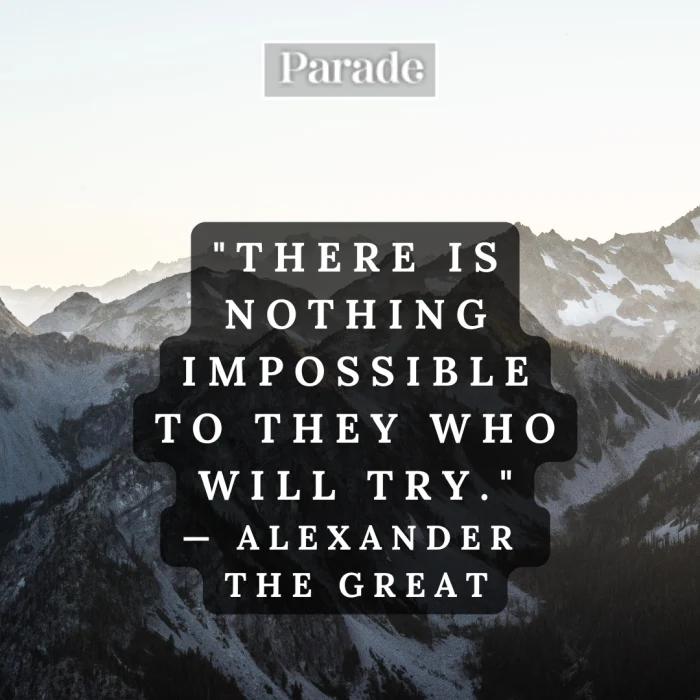

This is a website in progress, created by Turner Klippel for a project, and for resume purposes to show off my skills. At the bottom of each page is a link to my LinkedIn profile. If you want to reach out, please do so!
My resume is in the second tab, which is up to date with my current and past education, work experience, service, and some of my skills.
My original post is in the third tab, showing off some of my HTML5 and CSS skils.
